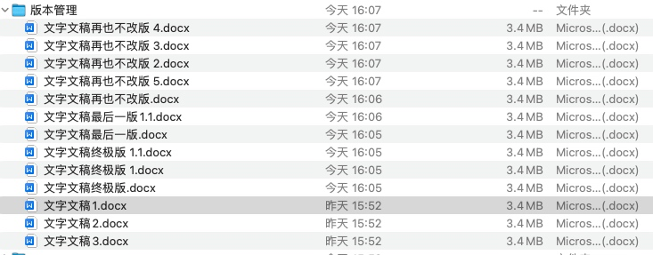
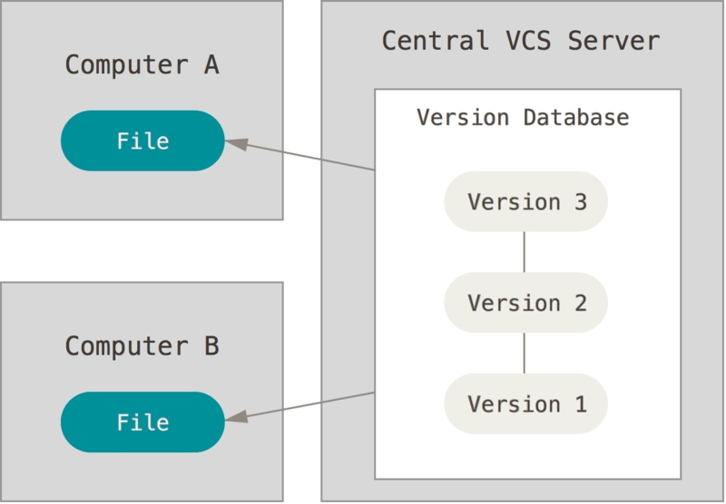
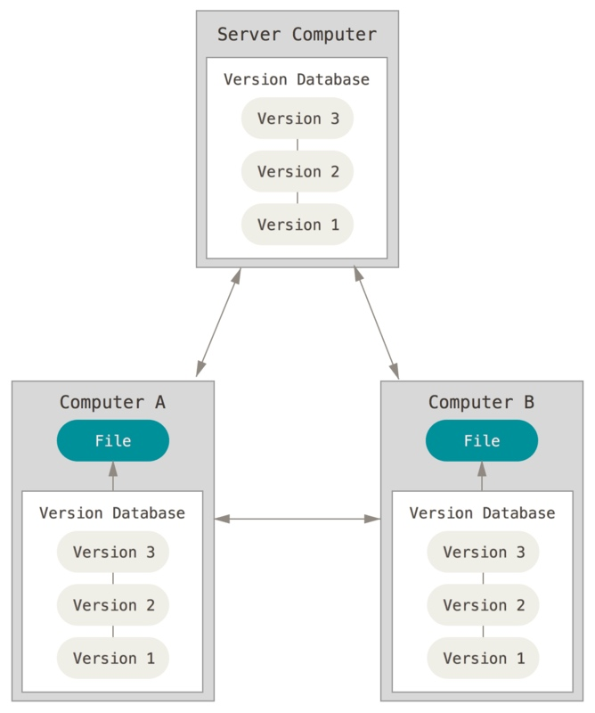
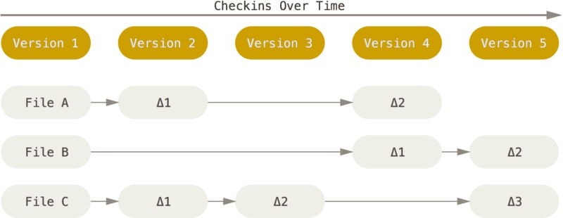

Git
从版本控制开始说起
版本管理一直以来都是挺烦人的事情，比如看下面的图  这还只是一个文件，当涉及到网络和多人协作的大型项目时，那简直是恐怖的灾难。不过很显然，在计算机的世界，有需要就会有轮子，如果没有，那就造一个
版本管理的思想
中心化管理 SVN
版本库放在中心服务器，所有人必须获得最新的版本，在最新的版本上提交他们的修改 
分布式管理 Git

Git
基于差异和分支的管理 
存储目录
 文件状态：
U、M、A
文件状态：
U、M、A
安装Git
Linux
sudo apt install git
Windows:下载Git bash
开始实战
初始化
git init
配置
git config --global user.name "John Doe"
git config --global user.email johndoe@example.com
git config --list
使用
git clone
git status
git add .
git commit -m ""
git commit
git commit -a -m
git push
git pull
远程
git remote
git remote add pb https://github.com/paulboone/ticgit
git push origin master
分支
git branch testing
git checkout testing
git merge hotfix
实践
本地的版本管理
工作区、暂存区、本地仓库 文件、分支、提交
git init
git config --global
git add .
git commit
git branch
git branch
和别人联网使用
远程仓库
remote